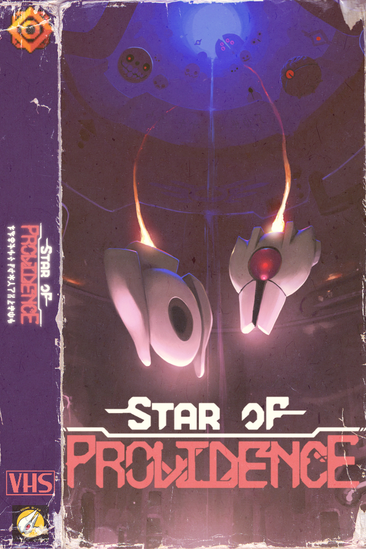

Game profile

Star of Providence
Every archived year-end list appearance, including placement and points earned.
About the Game
Star of Providence is a top down action shooter with procedurally generated elements. Explore a large, abandoned facility in search of incredible power, fighting dangerous foes and gaining new weapons and upgrades as you progress.
| Released | 2017-06-07 |
|---|---|
| Developer | Team D-13 |
| Publisher | Team D-13 |
| Genres | Action, Adventure, Indie |
| Platforms | Linux, PC |
SingleplayerSteam AchievementsFull controller supportAtmosphericsteam-trading-cardsGreat SoundtrackRPGStory RichFirst-Person2DSci-fiDifficult
Metacritic: 84
Game information provided by RAWG.
1List appearances
1Years represented
Points by Year
12025 points
List History
| Year | Source | List | Placement | Points |
|---|---|---|---|---|
| 2025 | SUPERJUMP | 50 Outstanding Games Released in 2025 | Unranked | 1 |